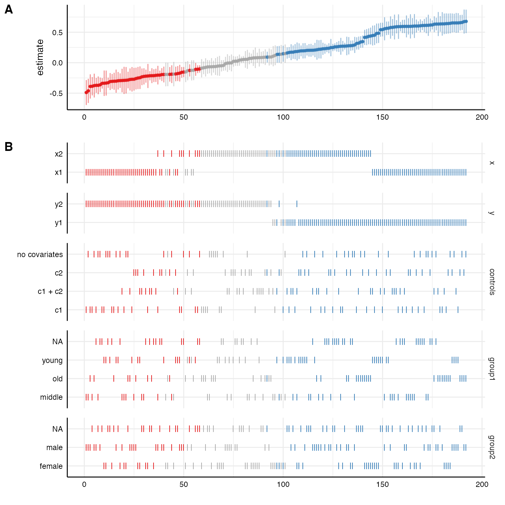
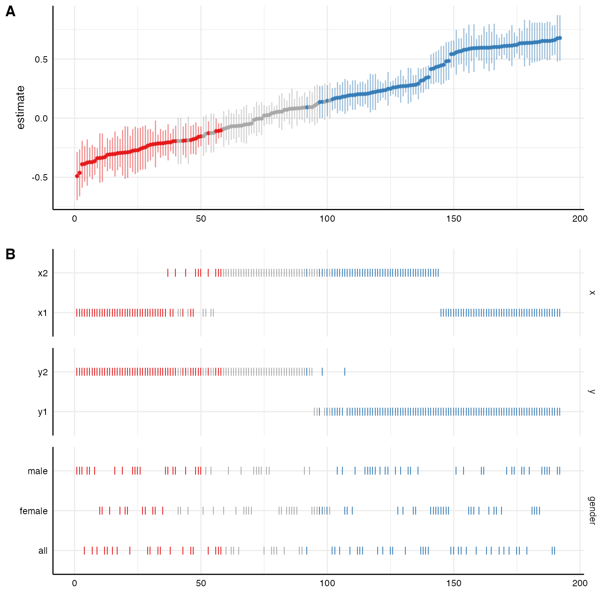
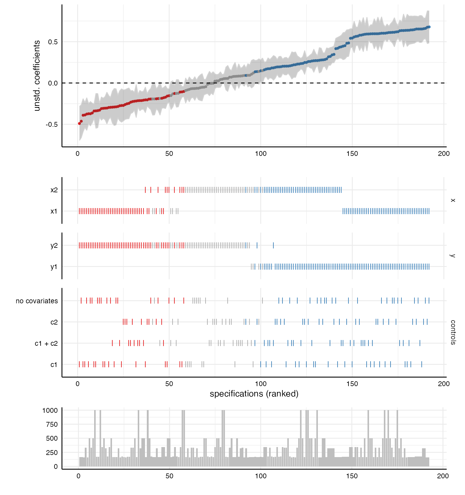
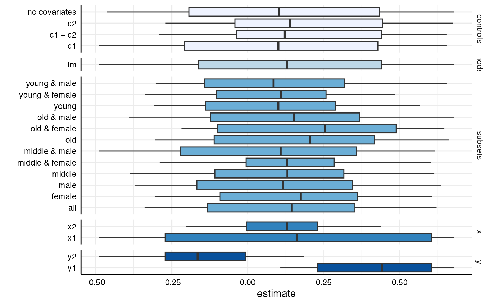
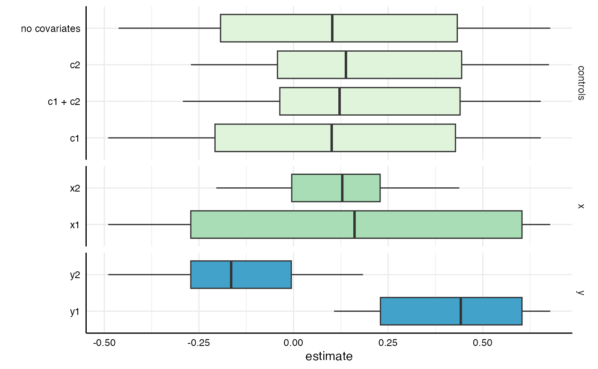
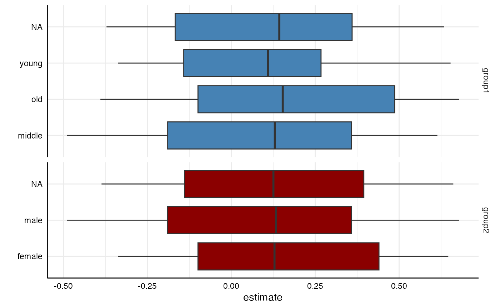
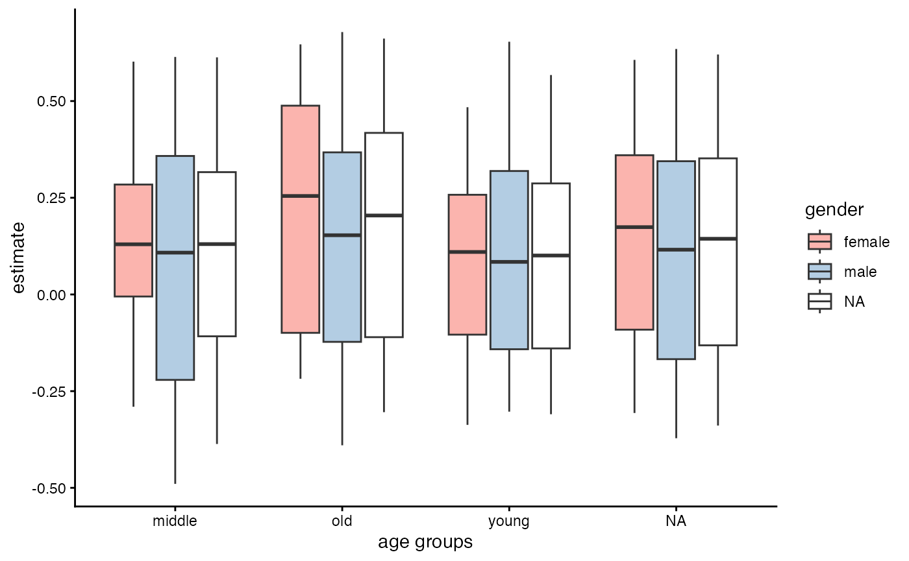

This vignette exemplifies different ways to plot results from
specification curve analyses. Since version 1.0.0, running the function
specr() creates an object of class
specr.object, which can be investigated and plotted using
generic functions (e.g., summary() and
plot()). For most cases, simply wrapping the function
plot() around the results will already create a
comprehensive visualization. However, more specific customization is
possible if we specify the argument type (e.g.,
type = "curve"). Different types are available. All of
resulting plots are objects of the class ggplot, which means
they can be customized and adjusted further using the grammar of
graphics provided by the package ggplot2. specr also
exports the function plot_grid() from the package
cowplot, which can be used to combine different types of
plots.
Specification curve analysis
Setting up specifications
In order to have some data to work with, we will use the example data included in the package.
# Load packages
library(tidyverse)
library(specr)
# Setup specifications
specs <- setup(data = example_data,
y = c("y1", "y2"),
x = c("x1", "x2"),
model = "lm",
controls = c("c1", "c2"),
subsets = list(group1 = c("young", "middle", "old"),
group2 = c("female", "male")))
# Summary of the specification setup
summary(specs)## Setup for the Specification Curve Analysis
## -------------------------------------------
## Class: specr.setup -- version: 1.1.0
## Number of specifications: 192
##
## Specifications:
##
## Independent variable: x1, x2
## Dependent variable: y1, y2
## Models: lm
## Covariates: no covariates, c1, c2, c1 + c2
## Subsets analyses: young & female, middle & female, old & female, female, young & male, middle & male, old & male, male, young, middle, old, all
##
## Function used to extract parameters:
##
## function (x)
## broom::tidy(x, conf.int = TRUE)
## <environment: namespace:specr>
##
##
## Head of specifications table (first 6 rows):
##
## # A tibble: 6 × 8
## x y model controls subsets group1 group2 formula
## <chr> <chr> <chr> <chr> <chr> <fct> <fct> <glue>
## 1 x1 y1 lm no covariates young & female young female y1 ~ x1 + 1
## 2 x1 y1 lm no covariates middle & female middle female y1 ~ x1 + 1
## 3 x1 y1 lm no covariates old & female old female y1 ~ x1 + 1
## 4 x1 y1 lm no covariates female NA female y1 ~ x1 + 1
## 5 x1 y1 lm no covariates young & male young male y1 ~ x1 + 1
## 6 x1 y1 lm no covariates middle & male middle male y1 ~ x1 + 1We can see that we will estimate 192 models.
Fitting the models
Next, we fit the models across these 192 specifications. As this
example won’t take much time, we do not parallelize (see
vignette("parallelization") for how to do so).
# Running specification curve analysis
results <- specr(specs)Investigating the results
Let’s quickly get some ideas about the specification curve by using
the generic summary() function.
# Overall summary
summary(results)## Results of the specification curve analysis
## -------------------
## Technical details:
##
## Class: specr.object -- version: 1.1.0
## Cores used: 1
## Duration of fitting process: 0.361 sec elapsed
## Number of specifications: 192
##
## Descriptive summary of the specification curve:
##
## median mad min max q25 q75
## 0.13 0.45 -0.49 0.68 -0.16 0.44
##
## Descriptive summary of sample sizes:
##
## median min max
## 250 160 1000
##
## Head of the specification results (first 6 rows):
##
## # A tibble: 6 × 26
## x y model controls subsets group1 group2 formula estimate std.error
## <chr> <chr> <chr> <chr> <chr> <fct> <fct> <glue> <dbl> <dbl>
## 1 x1 y1 lm no covaria… young … young female y1 ~ x… 0.48 0.08
## 2 x1 y1 lm no covaria… middle… middle female y1 ~ x… 0.6 0.1
## 3 x1 y1 lm no covaria… old & … old female y1 ~ x… 0.65 0.08
## 4 x1 y1 lm no covaria… female NA female y1 ~ x… 0.61 0.05
## 5 x1 y1 lm no covaria… young … young male y1 ~ x… 0.65 0.08
## 6 x1 y1 lm no covaria… middle… middle male y1 ~ x… 0.61 0.09
## # ℹ 16 more variables: statistic <dbl>, p.value <dbl>, conf.low <dbl>,
## # conf.high <dbl>, fit_r.squared <dbl>, fit_adj.r.squared <dbl>,
## # fit_sigma <dbl>, fit_statistic <dbl>, fit_p.value <dbl>, fit_df <dbl>,
## # fit_logLik <dbl>, fit_AIC <dbl>, fit_BIC <dbl>, fit_deviance <dbl>,
## # fit_df.residual <dbl>, fit_nobs <dbl>The median effect size is b = 0.13 (mad = 0.45). Sample sizes range
from 160 to 1000 (the full data set). We can also summarize different
aspects in more detail. For example, by adding
type = "curve", we are able to produce descriptive
summaries of the multiverse of parameters.
# Specific descriptive analysis of the curve, grouped by x and y
summary(results,
type = "curve",
group = c("x", "y"))## # A tibble: 4 × 9
## x y median mad min max q25 q75 obs
## <chr> <chr> <dbl> <dbl> <dbl> <dbl> <dbl> <dbl> <dbl>
## 1 x1 y1 0.605 0.0446 0.446 0.678 0.589 0.638 250
## 2 x1 y2 -0.272 0.0905 -0.490 -0.124 -0.314 -0.207 250
## 3 x2 y1 0.229 0.0651 0.107 0.438 0.193 0.276 250
## 4 x2 y2 -0.00536 0.115 -0.204 0.184 -0.0784 0.0731 250We see that it makes quite a difference what variables are actually used to estimate the relationship.
Visualizations
The primary goal of this vignette is to provide some examples of how
these results - and specifically the specification curve - can be
visualized. Because we received an object of class
specr.object, we can create most visualizations using the
generic plot() function. Different plots can be created by
changing the argument type (e.g.,
type = "boxplot").
Comprehensive standard visualization
The simplest way to visualize most of the information contained in
the results data frame is by using the plot() function
without any further arguments specified. In the background, the function
is actually set to type = "default", which creates both the
specification curve plot and the choice panel and combines them into a
larger figure.
plot(results)
We can further customize that function, e.g., by removing unnecessary information (in this case we only specified one model, plotting this analytical choice is hence useless) or by reordering/transforming the analytical choices (and thereby visualize specific contrasts).
# Customizing plot
plot(results,
choices = c("x", "y", "controls", # model is not plotted
"group1", "group2"), # subset split into original groups
rel_heights = c(.75, 2)) # changing relative heights
# Investigating specific contrasts
results$data <- results$data %>%
mutate(gender = ifelse(grepl("female", subsets), "female",
ifelse(grepl("male", subsets), "male", "all")))
# New variable as "choice"
plot(results,
choices = c("x", "y", "gender"))
More advanced customization
Plot curve and choices separately
Using plot(x, type = "default") is not very flexible. It
is designed to provide a quick, but meaningful visualization that covers
the most important aspects of the analysis. Alternatively, we can plot
the specification curve and the choice panel individually and bind them
together afterwards. This is useful as it allows us to customize and
change both individual plots (using ggplot-functions!)
# Plot specification curve
p1 <- plot(results,
type = "curve",
ci = FALSE,
ribbon = TRUE) +
geom_hline(yintercept = 0,
linetype = "dashed",
color = "black") +
labs(x = "", y = "unstd. coefficients")
# Plot choices
p2 <- plot(results,
type = "choices",
choices = c("x", "y", "controls")) +
labs(x = "specifications (ranked)")
# Combine plots (see ?plot_grid for possible adjustments)
plot_grid(p1, p2,
ncol = 1,
align = "v", # to align vertically
axis = "rbl", # align axes
rel_heights = c(2, 2)) # adjust relative heights
Include sample size histogram
By default, we do not know how many participants were included in
each specification. If you removed missing values listwise beforehand,
this may not be a big problem as all models are based on the same
subsample. If you have missing values in your dataset and you did not
impute them or delete them listwise, we should investigate how many
participants were included in each specification. Using
plot(x, type = "samplesizes"), we get a barplot that shows
the sample size per specification.
p3 <- plot(results, type = "samplesizes")
# Add to overall plot
plot_grid(p1, p2, p3,
ncol = 1,
align = "v",
axis = "rbl",
rel_heights = c(1.5, 2, 0.8))
Alternative way to visualize specification results
Although the above created figure is by far the most used in studies
using specification curve analysis, there are alternative ways to
visualize the results. As the parameters resulting from the different
specifications are in fact a distribution of parameters, a box-n-whisker
plot (short “boxplot”) is a great alternative to investigate differences
in results contingent on analytical choices. We simply have to use the
argument type = "boxplot" to create such plots.
# All choices
plot(results,
type = "boxplot") 
# Specific choices and further adjustments
plot(results,
type = "boxplot",
choices = c("x", "y", "controls")) +
scale_fill_brewer(palette = 4)
plot(results,
type = "boxplot",
choices = c("group1", "group2")) +
scale_fill_manual(values = c("steelblue", "darkred"))
Bear in mind, however, that next to these generic functions, we can always use the resulting data frame and plot our own figures.
results %>%
as_tibble %>%
ggplot(aes(x = group1, y = estimate, fill = group2)) +
geom_boxplot() +
scale_fill_brewer(palette = "Pastel1") +
theme_classic() +
labs(x = "age groups", fill = "gender")